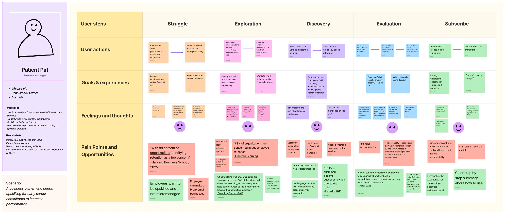
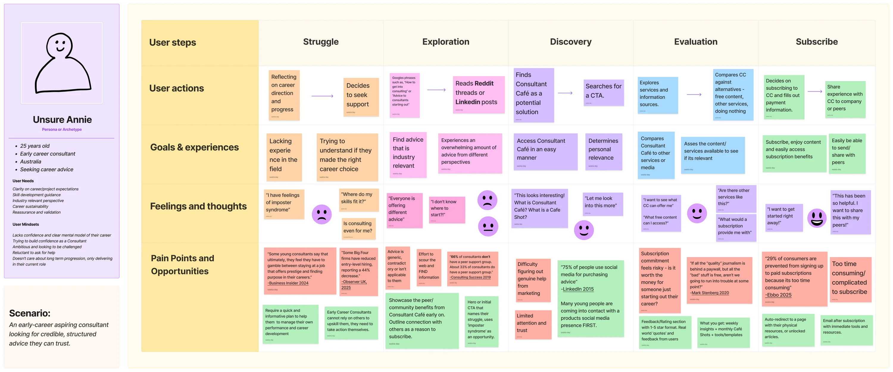

Consultant Cafe — Landing Page Redesign
An end-to-end redesign of the Consultant Cafe landing page. From journey maps and wireframes, through high-fidelity Figma mockups, into a custom Ghost CMS build written in VS Code.

The challenge
The existing Consultant Cafe landing page tried to serve everyone with one homepage, which meant it served no-one well. Two distinct audiences with very different needs were being funnelled into the same generic experience. Business owners were looking for measurable ROI, and individuals for personal guidance.
The brief was broader than a visual refresh. I was responsible for the redesign end-to-end: research and journey mapping, wireframes, high-fidelity prototypes in Figma, and the production build inside the live Ghost CMS theme. Three things made it harder than a normal landing page:
- Two pages had to share one design but feel made for different people.
- Each page had to make its audience feel understood.
- The design had to look the same in Ghost as it did in Figma.
Ideation and user personas
I built journey maps for each audience. Side by side, they revealed both groups of people naviagate through a similar journey. The structure needed to stay the same for both, whilst the content had to be different.
Business

Individual

I discovered that…
decrease in entry-level hiring reported by some Big Four firms.
Early career consultants are under pressure, and losing confidence.
Source: Observer UK, 2025.
of organisations identify retention as a top concern.
Businesses are under pressure too, and retention is the loudest worry.
Source: Harvard Business School, 2025.
Different pressures, same problem. Both audiences needed a to access information and guidance that simplifed the complex journey.
Wireframing
With user insights in mind, I wireframed a singular page architecture for both audiences. Layout, content hierarchy, and CTA placement stayed consistent across the board.Imagery, copy, and iconography became the variables that flexed per landing page.
![[PLACEHOLDER: Describe the mobile wireframe, e.g. 'Low-fidelity greyscale wireframe of the unified landing page on mobile, showing the page architecture, content hierarchy, and CTA placement shared across both audience variants.']](assets/[PLACEHOLDER-consultantcafe-wireframe-mobile].webp)
![[PLACEHOLDER: Describe the desktop wireframe, e.g. 'Low-fidelity greyscale wireframe of the unified landing page on desktop, showing the same page architecture and content hierarchy scaled up for wider viewports.']](assets/[PLACEHOLDER-consultantcafe-wireframe-desktop].webp)
High fidelity mockups
From the wireframes, I built one full-colour, mobile-first mockup in Figma against the Consultant Cafe brand system. Then I produced two variants of the same design, one for businesses and one for individuals, swapping the images, copy, and icons at each stage to speak to each audience without touching the underlying layout.
![[PLACEHOLDER: Describe the business variant, e.g. 'High-fidelity mockup of the unified landing page with the business variant applied: business-focused hero imagery, ROI-led copy, and business-specific iconography throughout.']](assets/[PLACEHOLDER-consultantcafe-mockup-business].webp)
![[PLACEHOLDER: Describe the individual variant, e.g. 'High-fidelity mockup of the unified landing page with the individual variant applied: warmer hero imagery, plain-language copy, and individual-focused iconography throughout.']](assets/[PLACEHOLDER-consultantcafe-mockup-individual].webp)
Building it in Ghost
Handing the design to a developer wasn't the brief. I built it. Working in VS Code against Consultant Cafe's Ghost theme, I translated the Figma design into Handlebars templates, semantic HTML, and the CSS and JavaScript that backs them. Because the journey-map insight led to a single shared design, the build is one landing template, with the images, copy, and icons editable by the team inside the Ghost admin to suit either audience.
- Theme work in VS Code. Extended the existing Ghost theme with one new landing template, keeping the rest of the site untouched.
- Design-to-code fidelity. Rebuilt the Figma design as HTML and CSS, so the production page matches the mockup pixel-for-pixel.
- Mobile-first, accessibility-first. Semantic markup, keyboard-reachable navigation, alt text, and ARIA labelling carried through from the design into the live theme.
- Editor-friendly. Structured the template so the Consultant Cafe team can swap between business and individual images, copy, and icons in the Ghost admin without breaking the layout.
What I delivered
- Two journey maps. One for businesses, one for individuals. Together they surfaced the shared-journey insight underpinning everything that followed.
- One wireframe, one mockup, two variants. The full Figma trail from low-fi structure to a single high-fidelity design, shown with each audience's images, copy, and icons applied.
- One unified Ghost CMS build. The redesign coded into Consultant Cafe's live Ghost theme in VS Code, with the audience-specific images, copy, and icons editable by the team in the Ghost admin.
See it live
The redesign goes live on the Consultant Cafe site soon. Once it ships, this link will take you straight to it.